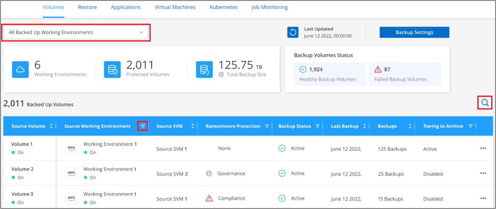
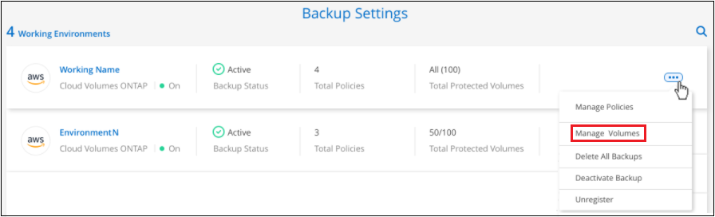
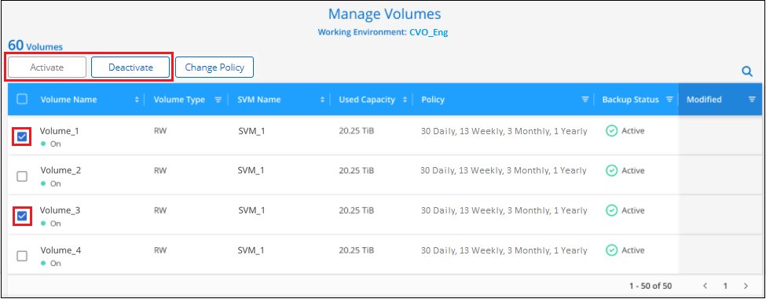
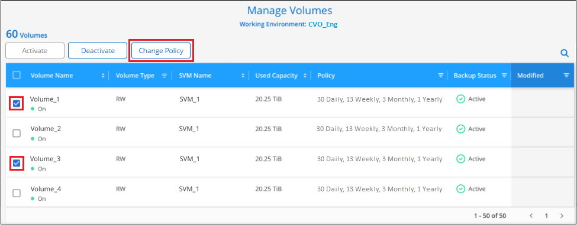
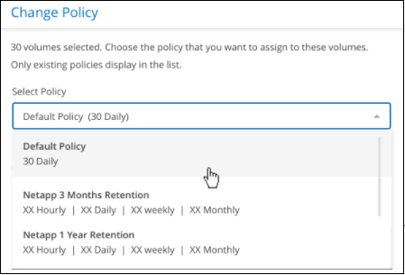
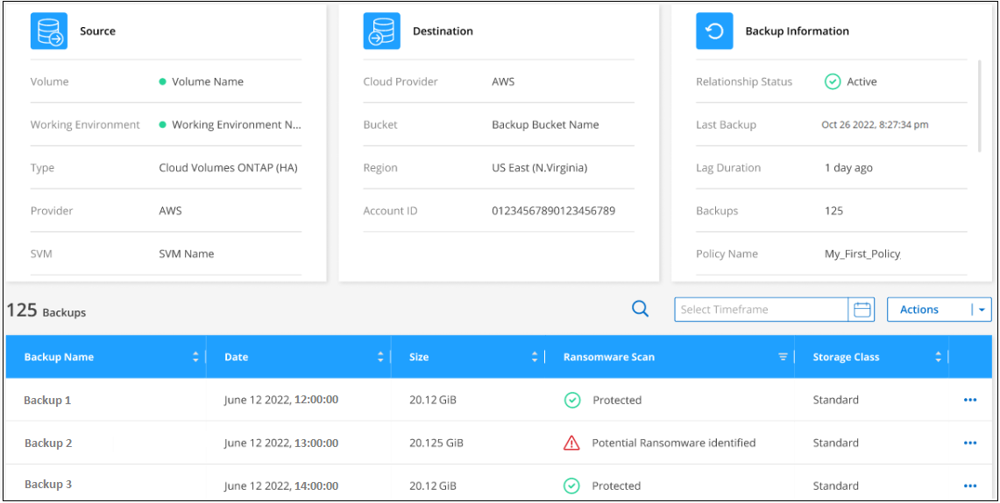
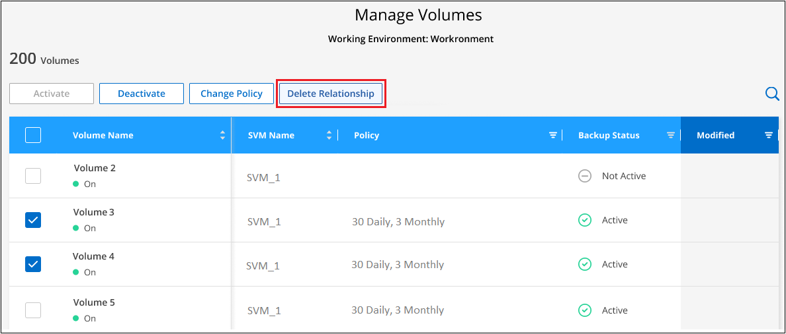
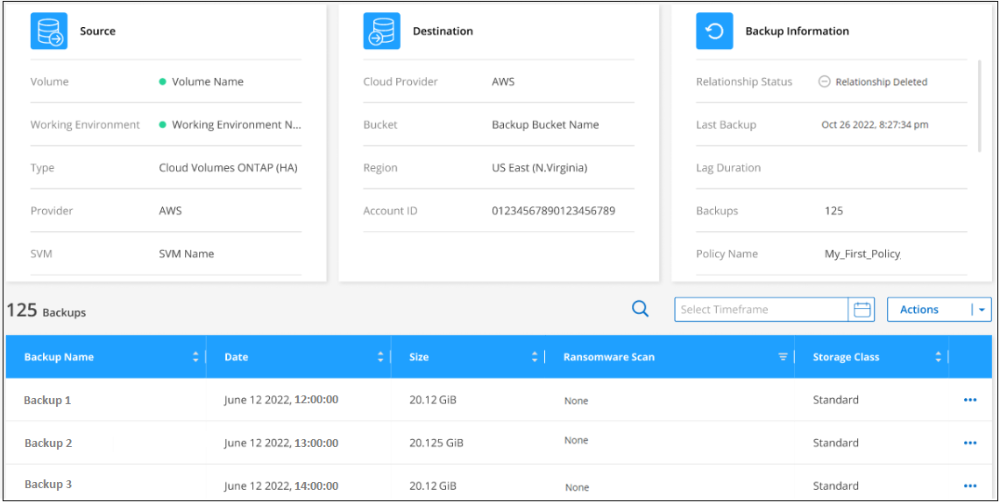

Amazon Web Services
Amazon Web Services
 Google Cloud
Google Cloud
 Microsoft Azure
Microsoft Azure
 Richiedi modifiche alla documentazione
Richiedi modifiche alla documentazione Modifica questa pagina
Modifica questa pagina Scopri come collaborare
Scopri come collaborareGestione dei backup per i sistemi ONTAP
Collaboratori
È possibile gestire i backup per i sistemi Cloud Volumes ONTAP e ONTAP on-premise modificando la pianificazione del backup, creando nuove policy di backup, attivando/disattivando i backup dei volumi, mettendo in pausa i backup, eliminando i backup e molto altro ancora.

|
Non gestire o modificare i file di backup direttamente dall’ambiente del cloud provider. Questo potrebbe danneggiare i file e causare una configurazione non supportata. |
Visualizzazione dei volumi di cui viene eseguito il backup
È possibile visualizzare un elenco di tutti i volumi attualmente sottoposti a backup nella dashboard di backup.
-
Dal menu BlueXP, selezionare protezione > Backup e ripristino.
-
Fare clic sulla scheda Volumes (volumi) per visualizzare l’elenco dei volumi di backup per i sistemi Cloud Volumes ONTAP e ONTAP on-premise.

Se si cercano volumi specifici in determinati ambienti di lavoro, è possibile perfezionare l’elenco in base all’ambiente di lavoro e al volume oppure utilizzare il filtro di ricerca.
Attivazione e disattivazione dei backup dei volumi
È possibile attivare i backup per tutti i nuovi volumi se non sono attualmente sottoposti a backup. È inoltre possibile attivare i backup per tutti i volumi precedentemente disattivati.
È possibile disattivare i backup per i volumi in modo che non vengano generati backup aggiuntivi. In questo modo viene disattivata anche la possibilità di ripristinare i dati del volume da un file di backup. Ciò consente di sospendere tutte le attività di backup e ripristino per un determinato periodo di tempo. I backup esistenti non verranno cancellati, pertanto il provider cloud continuerà a addebitare i costi di storage a oggetti per la capacità utilizzata dai backup a meno che non si utilizzi eliminare i backup.
-
Dalla scheda Volumes (volumi), selezionare Backup Settings (Impostazioni di backup).

-
Dalla pagina Backup Settings, fare clic su
 Per l’ambiente di lavoro e selezionare Manage Volumes (Gestisci volumi).
Per l’ambiente di lavoro e selezionare Manage Volumes (Gestisci volumi).
-
Selezionare la casella di controllo di uno o più volumi da modificare, quindi fare clic su Activate o Deactivate (Disattiva) a seconda che si desideri avviare o interrompere i backup del volume.

-
Fare clic su Save (Salva) per confermare le modifiche.
Modifica di un criterio di backup esistente
È possibile modificare gli attributi di un criterio di backup attualmente applicato ai volumi in un ambiente di lavoro. La modifica del criterio di backup influisce su tutti i volumi esistenti che utilizzano il criterio.

|
|
-
Dalla scheda Volumes (volumi), selezionare Backup Settings (Impostazioni di backup).
-
Nella pagina Backup Settings, fare clic su
Per l’ambiente di lavoro in cui si desidera modificare le impostazioni dei criteri e selezionare Gestisci criteri.
-
Dalla pagina Manage Policies, fare clic su Edit per il criterio di backup che si desidera modificare in quell’ambiente di lavoro.
Nota: Fare clic su
 per visualizzare i dettagli completi della policy.
per visualizzare i dettagli completi della policy.
-
Nella pagina Edit Policy, fare clic su
Per espandere la sezione etichette e conservazione per modificare la pianificazione e/o la conservazione del backup, quindi fare clic su Salva.
Se nel cluster è in esecuzione ONTAP 9.10.1 o versione successiva, è possibile attivare o disattivare il tiering dei backup nello storage di archiviazione dopo un certo numero di giorni.
"Scopri di più sull’utilizzo dello storage di archiviazione di Google". (Richiede ONTAP 9.12.1).
+
+ Nota: Tutti i file di backup che sono stati trasferiti allo storage di archiviazione su più livelli vengono lasciati in tale Tier se si interrompe il tiering dei backup da archiviare, ma non vengono automaticamente spostati di nuovo al Tier standard. Solo i nuovi backup dei volumi risiedono nel Tier standard.
Aggiunta di un nuovo criterio di backup
Quando si attiva il backup e il ripristino BlueXP per un ambiente di lavoro, tutti i volumi selezionati inizialmente vengono sottoposti a backup utilizzando il criterio di backup predefinito definito. Se si desidera assegnare criteri di backup diversi a determinati volumi con obiettivi RPO (Recovery Point Objective) diversi, è possibile creare criteri aggiuntivi per tale cluster e assegnarli ad altri volumi.
Se si desidera applicare un nuovo criterio di backup a determinati volumi in un ambiente di lavoro, è necessario prima aggiungere il criterio di backup all’ambiente di lavoro. Allora è possibile applicare il criterio ai volumi in tale ambiente di lavoro.
|
|
|
-
Dalla scheda Volumes (volumi), selezionare Backup Settings (Impostazioni di backup).
-
Nella pagina Backup Settings, fare clic su
Per l’ambiente di lavoro in cui si desidera aggiungere il nuovo criterio e selezionare Gestisci criteri. -
Dalla pagina Gestisci policy, fare clic su Aggiungi nuova policy.

-
Nella pagina Add New Policy, fare clic su
Per espandere la sezione etichette e conservazione per definire la pianificazione e la conservazione del backup, quindi fare clic su Salva.
Se nel cluster è in esecuzione ONTAP 9.10.1 o versione successiva, è possibile attivare o disattivare il tiering dei backup nello storage di archiviazione dopo un certo numero di giorni.
"Scopri di più sull’utilizzo dello storage di archiviazione di Google". (Richiede ONTAP 9.12.1).
+
Modifica del criterio assegnato ai volumi esistenti
È possibile modificare il criterio di backup assegnato ai volumi esistenti se si desidera modificare la frequenza di esecuzione dei backup o se si desidera modificare il valore di conservazione.
Tenere presente che il criterio che si desidera applicare ai volumi deve già esistere. Scopri come aggiungere una nuova policy di backup per un ambiente di lavoro.
-
Dalla scheda Volumes (volumi), selezionare Backup Settings (Impostazioni di backup).
-
Dalla pagina Backup Settings, fare clic su
Per l’ambiente di lavoro in cui sono presenti i volumi e selezionare Manage Volumes (Gestisci volumi). -
Selezionare la casella di controllo di uno o più volumi per i quali si desidera modificare il criterio, quindi fare clic su Change Policy (Modifica policy).

-
Nella pagina Change Policy, selezionare il criterio che si desidera applicare ai volumi e fare clic su Change Policy.

Se sono stati attivati DataLock e ransomware Protection nel criterio iniziale quando si attiva il backup e il ripristino di BlueXP per questo cluster, verranno visualizzati solo altri criteri configurati con DataLock. Inoltre, se non sono stati attivati DataLock e ransomware Protection durante l’attivazione del backup e ripristino di BlueXP, verranno visualizzati solo altri criteri che non hanno DataLock configurato. -
Fare clic su Save (Salva) per confermare le modifiche.
Creazione di un backup manuale del volume in qualsiasi momento
È possibile creare un backup on-demand in qualsiasi momento per acquisire lo stato corrente del volume. Ciò può essere utile se sono state apportate modifiche molto importanti a un volume e non si desidera attendere il successivo backup pianificato per proteggere tali dati, oppure se il volume non viene attualmente sottoposto a backup e si desidera acquisire lo stato corrente.
Il nome del backup include la data e l’ora in modo da poter identificare il backup on-demand di altri backup pianificati.
Se sono stati attivati DataLock e ransomware Protection durante l’attivazione del backup e ripristino BlueXP per questo cluster, anche il backup on-demand verrà configurato con DataLock e il periodo di conservazione sarà di 30 giorni. Le scansioni ransomware non sono supportate per i backup ad-hoc. "Scopri di più su DataLock e la protezione ransomware".
Quando si crea un backup ad-hoc, viene creata un’istantanea sul volume di origine. Poiché questa istantanea non fa parte di una normale pianificazione Snapshot, non viene disattivata. Una volta completato il backup, è possibile eliminare manualmente questa istantanea dal volume di origine. In questo modo, i blocchi correlati a questa istantanea verranno liberati. Il nome dell’istantanea inizia con cbs-snapshot-adhoc-. "Scopri come eliminare un’istantanea utilizzando la CLI di ONTAP".
|
|
Il backup dei volumi on-demand non è supportato sui volumi di protezione dei dati. |
-
Dalla scheda Volumes (volumi), fare clic su
Per il volume e selezionare Backup Now.
La colonna Backup Status (Stato backup) per quel volume visualizza "in corso" fino alla creazione del backup.
Visualizzazione dell’elenco dei backup per ciascun volume
È possibile visualizzare l’elenco di tutti i file di backup esistenti per ciascun volume. In questa pagina vengono visualizzati i dettagli relativi al volume di origine, alla posizione di destinazione e ai dettagli del backup, ad esempio l’ultimo backup eseguito, la policy di backup corrente, le dimensioni del file di backup e altro ancora.
-
Dalla scheda Volumes (volumi), fare clic su
Per il volume di origine e selezionare Details & Backup List.
Viene visualizzato l’elenco di tutti i file di backup con i dettagli relativi al volume di origine, alla posizione di destinazione e ai dettagli del backup.

Esecuzione di una scansione ransomware su un backup di un volume
Il software di protezione ransomware di NetApp esegue la scansione dei file di backup per cercare la prova di un attacco ransomware quando viene creato un file di backup e quando vengono ripristinati i dati di un file di backup. È inoltre possibile eseguire una scansione on-demand di protezione ransomware in qualsiasi momento per verificare l’usabilità di uno specifico file di backup. Questa operazione può essere utile se si è verificato un problema ransomware su un determinato volume e si desidera verificare che i backup di tale volume non siano interessati.
Questa funzione è disponibile solo se il backup del volume è stato creato da un sistema con ONTAP 9.11.1 o superiore e se sono stati attivati DataLock e protezione ransomware nel criterio di backup.
-
Dalla scheda Volumes (volumi), fare clic su
Per il volume di origine e selezionare Details & Backup List.Viene visualizzato l’elenco di tutti i file di backup.
-
Fare clic su
Per il file di backup del volume che si desidera sottoporre a scansione e fare clic su ransomware Scan.
La colonna ransomware Scan (scansione ransomware) indica che la scansione è in corso.
Eliminazione dei backup
Il backup e ripristino BlueXP consente di eliminare un singolo file di backup, eliminare tutti i backup di un volume o eliminare tutti i backup di tutti i volumi in un ambiente di lavoro. È possibile eliminare tutti i backup se non sono più necessari o se il volume di origine è stato eliminato e si desidera rimuovere tutti i backup.
Nota: Non è possibile eliminare i file di backup bloccati utilizzando DataLock e la protezione ransomware. L’opzione "Delete" (Elimina) non sarà disponibile dall’interfaccia utente se sono stati selezionati uno o più file di backup bloccati.
|
|
Se si prevede di eliminare un ambiente di lavoro o un cluster con backup, è necessario eliminare i backup prima di eliminare il sistema. Il backup e il ripristino di BlueXP non eliminano automaticamente i backup quando si elimina un sistema e non esiste attualmente alcun supporto nell’interfaccia utente per eliminare i backup dopo che il sistema è stato eliminato. I costi di storage a oggetti per i backup rimanenti continueranno a essere addebitati. |
Eliminazione di tutti i file di backup per un ambiente di lavoro
L’eliminazione di tutti i backup per un ambiente di lavoro non disattiva i backup futuri dei volumi in questo ambiente di lavoro. Se si desidera interrompere la creazione di backup di tutti i volumi in un ambiente di lavoro, è possibile disattivare i backup come descritto qui.
-
Dalla scheda Volumes (volumi), selezionare Backup Settings (Impostazioni di backup).
-
Fare clic su
Per l’ambiente di lavoro in cui si desidera eliminare tutti i backup e selezionare Elimina tutti i backup.
-
Nella finestra di dialogo di conferma, immettere il nome dell’ambiente di lavoro e fare clic su Delete (Elimina).
Eliminazione di tutti i file di backup di un volume
L’eliminazione di tutti i backup per un volume disattiva anche i backup futuri per quel volume.
È possibile riavviare l’esecuzione dei backup per il volume In qualsiasi momento dalla pagina Gestisci backup.
-
Dalla scheda Volumes (volumi), fare clic su
Per il volume di origine e selezionare Details & Backup List.Viene visualizzato l’elenco di tutti i file di backup.
-
Fare clic su azioni > Elimina tutti i backup.

-
Nella finestra di dialogo di conferma, inserire il nome del volume e fare clic su Delete (Elimina).
Eliminazione di un singolo file di backup per un volume
È possibile eliminare un singolo file di backup. Questa funzione è disponibile solo se il backup del volume è stato creato da un sistema con ONTAP 9.8 o superiore.
-
Dalla scheda Volumes (volumi), fare clic su
Per il volume di origine e selezionare Details & Backup List.Viene visualizzato l’elenco di tutti i file di backup.
-
Fare clic su
Per il file di backup del volume che si desidera eliminare e fare clic su Delete (Elimina).
-
Nella finestra di dialogo di conferma, fare clic su Delete (Elimina).
Eliminazione delle relazioni di backup del volume
L’eliminazione della relazione di backup per un volume fornisce un meccanismo di archiviazione se si desidera interrompere la creazione di nuovi file di backup ed eliminare il volume di origine, mantenendo tutti i file di backup esistenti. Ciò consente di ripristinare il volume dal file di backup in futuro, se necessario, liberando spazio dal sistema di storage di origine.
Non è necessario eliminare il volume di origine. È possibile eliminare la relazione di backup per un volume e conservare il volume di origine. In questo caso, è possibile "attivare" il backup sul volume in un secondo momento. In questo caso, la copia di backup di riferimento originale continua ad essere utilizzata: Una nuova copia di backup di riferimento non viene creata ed esportata nel cloud. Se si riattiva una relazione di backup, al volume viene assegnato il criterio di backup predefinito.
Questa funzione è disponibile solo se nel sistema è in esecuzione ONTAP 9.12.1 o versione successiva.
Non è possibile eliminare il volume di origine dall’interfaccia utente di backup e ripristino di BlueXP. Tuttavia, è possibile aprire la pagina Volume Details (Dettagli volume) in Canvas, e. "eliminare il volume da lì".
|
|
Una volta eliminata la relazione, non è possibile eliminare i singoli file di backup dei volumi. Tuttavia, è possibile "eliminare tutti i backup del volume" se si desidera rimuovere tutti i file di backup. |
-
Dalla scheda Volumes (volumi), selezionare Backup Settings (Impostazioni di backup).
-
Dalla pagina Backup Settings, fare clic su
Per l’ambiente di lavoro e selezionare Manage Volumes (Gestisci volumi). -
Selezionare la casella di controllo di uno o più volumi che si desidera eliminare dalla relazione di backup, quindi fare clic su Delete Relationship (Elimina relazione).

-
Fare clic su Save (Salva) per confermare le modifiche.
Nota: È possibile eliminare anche la relazione di backup per un singolo volume dalla pagina Volumes (volumi).

Quando si visualizza l’elenco dei backup per ciascun volume, viene visualizzato "Relationship Status" (Stato relazione) come Relationship deleted (relazione eliminata).

Disattivazione del backup e ripristino BlueXP per un ambiente di lavoro
La disattivazione del backup e ripristino BlueXP per un ambiente di lavoro disattiva i backup di ciascun volume sul sistema e disattiva anche la possibilità di ripristinare un volume. I backup esistenti non verranno eliminati. In questo modo non si annulla la registrazione del servizio di backup da questo ambiente di lavoro, ma è possibile sospendere tutte le attività di backup e ripristino per un determinato periodo di tempo.
Tieni presente che il tuo cloud provider continuerà a addebitare i costi dello storage a oggetti per la capacità utilizzata dai backup, a meno che tu non lo utilizzi eliminare i backup.
-
Dalla scheda Volumes (volumi), selezionare Backup Settings (Impostazioni di backup).
-
Dalla pagina Backup Settings, fare clic su
Per l’ambiente di lavoro in cui si desidera disattivare i backup e selezionare Disattiva backup.
-
Nella finestra di dialogo di conferma, fare clic su Disattiva.
|
|
Quando il backup è disattivato, viene visualizzato il pulsante Activate Backup (attiva backup) per quell’ambiente di lavoro. Fare clic su questo pulsante per riattivare la funzionalità di backup per l’ambiente di lavoro. |
Annullamento della registrazione di backup e ripristino BlueXP per un ambiente di lavoro
È possibile annullare la registrazione di backup e ripristino BlueXP per un ambiente di lavoro se non si desidera più utilizzare la funzionalità di backup e si desidera smettere di pagare per i backup in tale ambiente di lavoro. In genere, questa funzione viene utilizzata quando si intende eliminare un ambiente di lavoro e si desidera annullare il servizio di backup.
È inoltre possibile utilizzare questa funzione se si desidera modificare l’archivio di oggetti di destinazione in cui vengono memorizzati i backup del cluster. Dopo aver disregistrato il backup e il ripristino BlueXP per l’ambiente di lavoro, è possibile attivare il backup e il ripristino BlueXP per quel cluster utilizzando le informazioni del nuovo provider di cloud.
Prima di annullare la registrazione di backup e ripristino BlueXP, è necessario eseguire le seguenti operazioni, nell’ordine indicato:
-
Disattivare il backup e ripristino BlueXP per l’ambiente di lavoro
-
Eliminare tutti i backup per l’ambiente di lavoro
L’opzione di annullamento della registrazione non è disponibile fino al completamento di queste due azioni.
-
Dalla scheda Volumes (volumi), selezionare Backup Settings (Impostazioni di backup).
-
Dalla pagina Backup Settings, fare clic su
Per l’ambiente di lavoro in cui si desidera annullare la registrazione del servizio di backup e selezionare Annulla registrazione.
-
Nella finestra di dialogo di conferma, fare clic su Annulla registrazione.